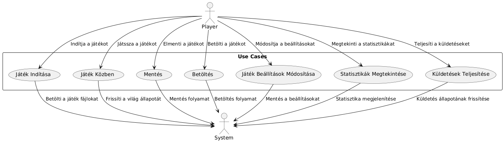

Csoport neve: 5 fiú, 1 játék
Feladat sorszáma: 3.
Feladat címe: Software követelmény analízis
Software követelmény analízis
Gyakorlatvezető:
Dr. Mileff Péter
Csoport tagok:
|
Behinya Ádám |
A24NVW |
adi.behinya@gmail.com |
|
Czibik Lóránt Patrik |
K1IFAB |
clorant2002@gmail.com |
|
Tolnay Benke Tamás |
I89JMB |
malyva1262@gmail.com |
|
Dudás Dániel |
ADVLIC |
dudasdaniel01@gmail.com |
|
Demján Botond |
SOZGAL |
botond.demjan@student.uni-miskolc.hu |
2024. 10. 29.
|
Dátum |
Verzió |
Leírás |
Szerző |
|---|---|---|---|
|
2024. 09. 28. |
0.0 |
Első verzió (Struktúra feltöltése) |
Czibik Lóránt Patrik |
|
2024. 10. 27. |
1.0 |
Második verzió |
Behinya Ádám |
|
2024. 10. 29. |
1.1 |
Mellékletek feltöltése |
Czibik Lóránt Patrik |
Ez a dokumentáció a Godot játékmotor használatával fejlesztett „George Fergen's Last Adventure” játékunk specifikációit és követelményeit mutatja be. Az SRS (Software Requirements Specification) célja, hogy átfogó képet nyújtson a játék felépítéséről, működéséről és fejlesztési irányelveiről, valamint meghatározza a rendszerrel szembeni követelményeket.
1.1 CélkitűzésekA játék egy klasszikus, pixelart stílusú platformjáték, amely egy középkori fantasy világba kalauzolja a játékosokat. A játék célja egy akciódús, kihívásokkal teli élmény nyújtása, amely emlékeztet a régi, klasszikus platformerekre, ugyanakkor modern mechanikákkal és dizájnnal frissítve. A játékos egy lovag szerepét ölti magára, akinek küldetése, hogy átküzdve magát különféle akadályokon és ellenségeken, végig haladjon a pályán és teljesítse a kalandját, azaz végig vigye a játékot.
1.2 Alkalmazási TerületA dokumentum a fejlesztők, dizájnerek és tesztelők számára készült, hogy megértsék a játék működését és alapvető funkcióit. Ezenkívül hasznos lehet a projekt menedzserek és befektetők számára, akik átfogó képet szeretnének kapni a projekt részleteiről. A dokumentáció részletesen kitér a játékmechanikákra és a játék futtatásához szükséges hardver- és szoftverkövetelményekre.
1.3 Fogalmak és Rövidítések a BevezetéshezEz a fejezet összefoglalja a „George Fergen's Last Adventure” játék szempontjából fontos általános körülményeket, melyek segítenek megérteni a későbbi fejezetekben részletezett követelményeket. A cél, hogy átfogó képet adjunk a termék környezetéről, funkcióiról, felhasználóiról, valamint a fejlesztés során figyelembe vett korlátozásokról, feltételezésekről és függőségekről.
2.1 Termék KörnyezeteA "George Fergen's Last Adventure" egy Godot játékmotor segítségével fejlesztett, 2D platformer játék, amely egy középkori fantasy világban játszódik. A játék egy retro, pixelart grafikai stílust alkalmaz, és különböző akadályokkal, ellenségekkel és kihívásokkal teli pályákon keresztül vezeti végig a játékost. A játékot egyjátékos üzemmódban lehet játszani, és célja, hogy egy szórakoztató, nosztalgikus játékélményt nyújtson modern elemekkel ötvözve. A játék fejlesztése során nyílt forráskódú szoftvereket használunk, amelyek könnyen integrálhatóak a projektbe.
2.2 Legfontosabb FunkciókA rendszer funkciót bemutató use case diagram:
A felhasználói felület tervezése során figyelembe lett véve a hasonló játékok elterjedt felhasználói felülete. Ennek eredményeként a felhasználók számára ismerős elrendezést és navigációt biztosít, így gyorsabb betanulást segíti elő.
Párhuzamos alkalmazások összhangjaA fejlesztés során figyelmet fordítottunk arra, hogy a rendszer felhasználói felülete összhangban legyen a leggyakrabban használt alkalmazásokkal. A felhasználók számára így gördülékeny átmenetet biztosítunk, amikor a rendszer mellett más alkalmazásokat is használnak, például üzenetküldő vagy közösségi média platformok.
A rendszer esetében a hibák között eltelt átlagos idő (MTBF) legalább 500 üzemóra kell, hogy legyen. Ez biztosítja, hogy a felhasználók hosszú időn keresztül zavartalanul élvezhessék a játékot, mielőtt bármilyen hiba fellépne.
MTTR (Mean Time To Repair)A rendszer javítására vonatkozóan a hiba utáni javítás átlagos ideje (MTTR) nem haladhatja meg a 30 percet. Ez magában foglalja a hibák diagnosztizálását és a javítások elvégzését, hogy a felhasználók minél hamarabb visszatérhessenek a játékhoz.
Eredmények pontossága és felbontásEbben a részben a rendszer által megkövetelt teljesítménymutatók kerülnek bemutatásra, különböző szempontok szerint.
6.1. VálaszidőkA válaszidők kritikusak a játék gördülékeny működésének biztosításában, mivel a felhasználói bevitelekre adott gyors és folyamatos reakció elengedhetetlen a jó játékélményhez. Az optimális válaszidők betartása különösen a gyors mozgásokat és gyakori állapotváltásokat érintő helyzetekben fontos, mert a mozgásnak közvetlenül követnie kell a gombnyomást, hogy a játékos elkerülhesse az egyes akadályokat vagy időben reagálhasson az ellenfelek támadásaira.
Az áteresztőképesség határozza meg, hogy a játék képes-e nagy mennyiségű felhasználói interakció és játékmechanika egyidejű kezelésére, különösen a gyors egymás utáni vagy párhuzamos akciók esetén. Az áteresztőképesség megfelelő optimalizálása biztosítja a játék folyamatos és akadásmentes működését.
Állapotváltozások áteresztőképessége:Mentési fájlok maximális mérete: Az ini formátumú beállítási fájlok (mint a settings.ini) maximális mérete 5 MB, amely magában foglalja a felhasználói beállításokat és az elért képességeket. Ezzel a kapacitással a rendszer kellő adatot tárolhat anélkül, hogy a betöltési időt megnövelné.
Felhasználói egyidejű kiszolgálás: Mivel a játék egyjátékos üzemmódban készül, egy időben egyetlen felhasználót kell kiszolgálni. Az egyjátékos módban viszont elengedhetetlen, hogy a rendszer erőforrás-használata hatékony maradjon, mivel a játék intenzív eseményei (pl. gyors állapotváltások, támadások, ugrások) közben az erőforrásigények megnőhetnek. Az egyidejű felhasználók számának kezelése több szempontból is fontos:
Adatkapacitás: A játékban kezelt állapotok és mozgások feldolgozásához körülbelül 50 MB memóriakapacitás szükséges. Ennek a memóriakapacitásnak az optimalizálása érdekében figyelembe vettük a következő szempontokat:
Stabilitás korlátozott funkciók esetén: Amikor a játék „korlátozott használhatóságú” állapotba kerül, például alacsony memória vagy CPU túlterhelés esetén, a rendszer teljesítménye csökkenhet, ami a válaszidők növekedéséhez vezethet. A cél az, hogy a játék ezen körülmények között is stabil maradjon, és a felhasználói élményt minimálisan befolyásolja. A válaszidők maximalizálása érdekében a játék nem fagyhat le vagy akadályozhatja a felhasználói interakciót. Az alapvető műveletek, mint például az IdleState és MoveState közötti váltások, esetén a válaszidőnek legfeljebb 100 ms-nak kell lennie. Ez az időkeret lehetővé teszi, hogy a játékosok továbbra is reagálhassanak a játék mechanikájára, és fenntartsák a játék folytatását, még ha a rendszer terhelése nő is.
Funkciók priorizálása: Korlátozott működésnél a jump és dash funkciók kiemelt prioritást élveznek, mivel ezek alapvetőek a játékélmény szempontjából. A rendszer automatikusan biztosítja, hogy ezek a funkciók alacsonyabb válaszidőkkel rendelkezzenek, míg a nem létfontosságú funkciók lecsökkenthetők, így a játékosok továbbra is hatékonyan reagálhatnak a játékmenetre.
6.5 ErőforrásigényekAz online dokumentáció célja, hogy a játékosok részletes útmutatást és háttérinformációkat kapjanak a játék világáról, rendszerkövetelményeiről és működéséről. A dokumentáció felépítése áttekinthető, lépésről lépésre bemutatva a játék használatát, fejlesztési folyamatait és a felhasználói élmény maximalizálásához szükséges eszközöket.
Az alábbi elemek tartoznak az online dokumentációhoz:A Help rendszer támogatja a játékosokat abban, hogy gyors és részletes válaszokat találjanak a játékmenethez, irányításhoz, karakterfejlődéshez és a játék funkcióihoz kapcsolódó kérdésekre. A Help rendszer interaktív, a játékosok fejlődéséhez igazodik, és közvetlenül a játékon belül érhető el.
Az alábbi elemek tartoznak a Help rendszerhez:A játék a megszokott mozgás irányítást fogja használni, ami a 2D platformer játékoknál ismert. WASD / nyíl billenytűk lesznek a játékos vertikális és horizontális mozgását irányító gombok. Emellet elterjedt speciális irányítási gombok, mint például: támadás, dash-elés is a SHIFT és J gombokkal használhatók. Ebből adódóan nem lesz problémája a játék irányításának megértésével egy átlagos felhasználónak sem.
Az alapértelmezett billenytűkiosztás:Mivel a játékot szeretnénk, hogy minnél több féle felhasználó megértse (gyerekek, alkalmi játékosok, hardcore játékosok, stb.) ezért egyszerű UI elemeket fogunk használni, amelyek nem térnek el a megszokottól vagy a megszokottnál átláthatóbbak.
UI elemek:Beállitásokban a játékos kikapcsolhatja a Haptic feedback (rezgés)-t
11.3. Software interfészek – Lokális mentés és betöltésEz a mellékletek szakasz további hivatkozásokat, fogalmakat, és forrásokat tartalmaz, amelyek segítik a dokumentum átláthatóságát, valamint a fejlesztők és érdekeltek számára gyors hozzáférést biztosítanak a legfontosabb információkhoz és kiegészítő forrásokhoz.
Tárgymutató